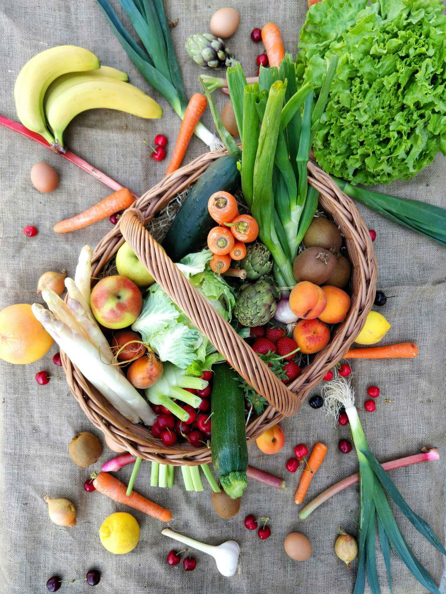

Same-day groceries in your neighbourhood
All your weekly food shopping, delivered in one simple order
FreshBasket Market connects you to trusted local markets and super markets so you can stock up on fresh produce, pantry staples and household essentials without leaving home.
- Order before 4pm for free same-day delivery in eligible areas
- Real-time stock from partner stores so you can only see what is available
- Secure checkout with saved addresses and payment methods

How FreshBasket Market Works
From browsing to delivery, we make weekly shopping simple and predictable
1. Browse local stores
Enter your address to see nearby supermarkets and open-air maarket. Filter by price, distance or specialty products.
2. Fill your baskets
Add fresh produce, grains, meats, snacks and household items. See live totals, delivery windows and substitution options
3.Track your delivery
Our shoppers pick and pack your order carefully. Follow your rider on the map and rreceive updates until it reaches your door.
Everything you need in one place
Shop across aisles just like in a physical supermarket
Fresh fruits & vegetables
Crisp lettuce, ripe tomatoes, seasonal fruits, herbs and more sourced daily from partner farms and markets.
- •Hand-selected produce with quality checks before dispatch.
- •Seasonal bundles designed for soup, salads and stir-fries
Pantry & dry goods
Stock up on rice, pasta, beanss, flour, spices, tinned foods and everyday cooking essentials from trusted brands.
- •Bulk and family-size options to help you save on weekly staples.
- •Clear labellling for dietary need such as glutem-free or vegan.
Dairy, Meat & Frozen
From milk, yoghurt and cheese to poultry, seafood and frozen vegetables, keep your fridge and freezer fully stocked.
- •Temperature-controlled delivery to protect sensitive items.
- •Easy re-ordering of your fridge favorites in one tap
Ready to simplify your grocery shopping?
Create a free FreshBasket Market account, save your usual items and delivery addresses, and complete your next weekly shop in under ten minutes.
Create a Free account